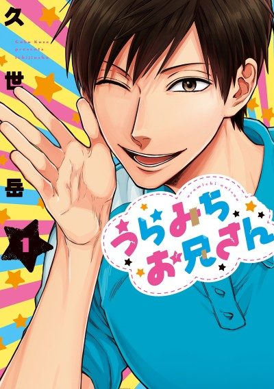

Anime
Anime
Manga2021 · Comedy, Slice of Life
Life Lessons with Uramichi Oniisan
うらみちお兄さん
AniList7.5
Animeter—
Episodes13 ep
MangaCh. 38
Anime finished. Where does the manga pick up?
Start at Chapter38
The anime adapts the manga up to Chapter 37 (latter half of Volume 4). Continue from Chapter 38.
137ongoing
Season 1Start reading here